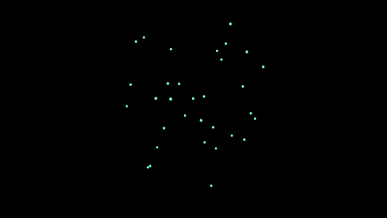
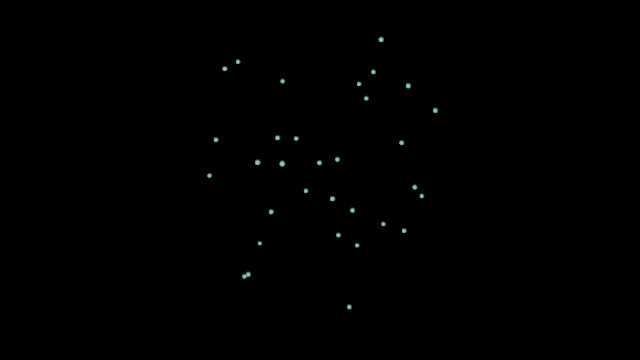
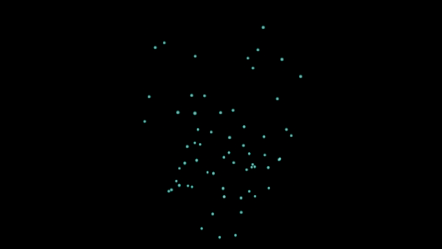

English
77的技术美术实战 · TA15 技术补充
缓存从第 56 帧切入，为什么一帧里会有两种状态？
在这次 UE 5.8.4／D3D11 对照中，MRQ 对同一输出帧取两个时间子样本。短缓存区段的两个子样本恰好读到不同状态。下方状态卡来自反序复测日志，每组的两个组件读数一致，绑定对象分别为 A、B。
C0｜完整缓存参照
第一个子样本
已绑定缓存 · Active
DesiredAge · 实际年龄 0.96458 秒
第二个子样本
已绑定缓存 · Active
DesiredAge · 实际年龄 0.96875 秒

实测输出，第 56 帧
C1｜仅显示缓存
第一个子样本
无缓存绑定 · Complete
TickDeltaTime · 实际年龄 0 秒
第二个子样本
已绑定缓存 · Active
DesiredAge · 实际年龄 0.96875 秒

实测输出，第 56 帧
C1Live｜区段外实时模拟
第一个子样本
无缓存绑定 · Active
TickDeltaTime · 实际年龄 0.06667 秒
第二个子样本
已绑定缓存 · Active
DesiredAge · 实际年龄 0.96875 秒

实测输出，第 56 帧
上方 PNG 是完整输出帧，每张包含 MRQ 的时间采样结果。子样本状态来自渲染阶段回调，未单独输出子样本画面或记录精确序列求值时刻。
沿着第 54–57 帧看状态
反序记录中，两个 Niagara Actor 的缓存绑定和运行状态一致。C0 在 8 个回调中均已绑定缓存且为 Active。第 54 帧 0/2 到第 56 帧 0/2，两个短区段一直未绑定缓存，C1 为 Complete，C1Live 为 Active。从第 56 帧 1/2 到第 57 帧 1/2，两组都已绑定缓存且为 Active。
因此，这次观测只能把状态切换夹在第 56 帧的两次回调之间。第 57 帧的状态读数相同，最终画面的差异仍需用输出图另行比较。
动手自查
如果只读第二个子样本，能否看出 C1 和 C1Live 在第 56 帧发生过什么差别？
展开核对
第二个子样本中两组都绑定缓存且 Active。区别要回到第一个子样本查，C1 是 Complete，C1Live 是 Active。复查自己的镜头时，记录输出帧号、子样本序号、缓存对象和执行状态，并保留同帧参照。
用第 56 帧原图复算掩膜
把 C0.png、C1.png、C1Live.png 和 复算脚本存到同一目录。用 python -m pip install Pillow 安装依赖，再依次执行：
python ta15-mask-compare.py C0.png C1.png --threshold 30
python ta15-mask-compare.py C0.png C1Live.png --threshold 30
以 G > 30 判为前景，C0、C1、C1Live 的前景分别为 734、823、1233 像素。与同一张 C0 比较，两组分别有 103、593 个位置的前景判定不同。这里比较的是最终合成 PNG，两个时间子样本的状态要另看回调记录。
实验边界
60 fps、240 ticks/s，居中快门、运动模糊 0.5、时间采样 2。三条件正反序的 48 条状态记录匹配。反序探针开关的 12 对 G>30 前景掩膜均一致，RGB 的最大单通道差为 1。数据支持本镜头的渲染阶段状态差异，逐子样本图像贡献和微小 RGB 差异来源仍待验证。
下载 48 条反序状态 · 下载 12 对开关核对
check_samples.py · 把脚本与两份 CSV 放在同一目录，运行 python check_samples.py，可汇总第 56 帧状态和 12 对差异记录。脚本只读取 CSV。
返回 TA15 免费搭建手册
作者实测，AI 辅助整理。